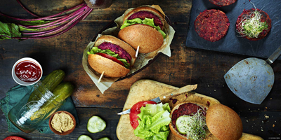
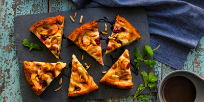
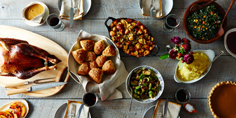
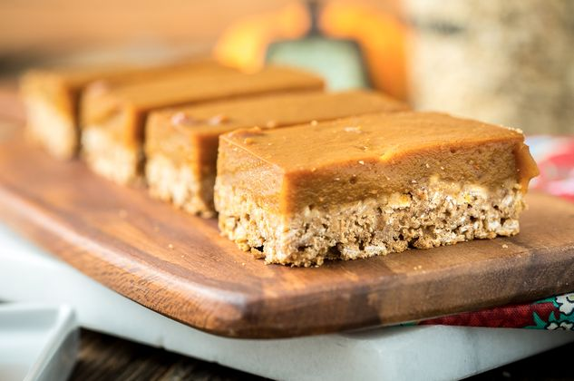
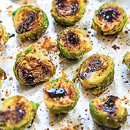
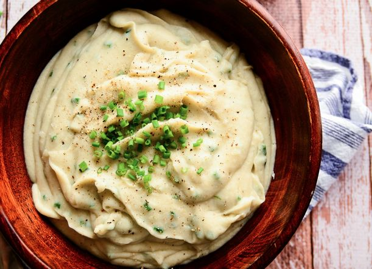
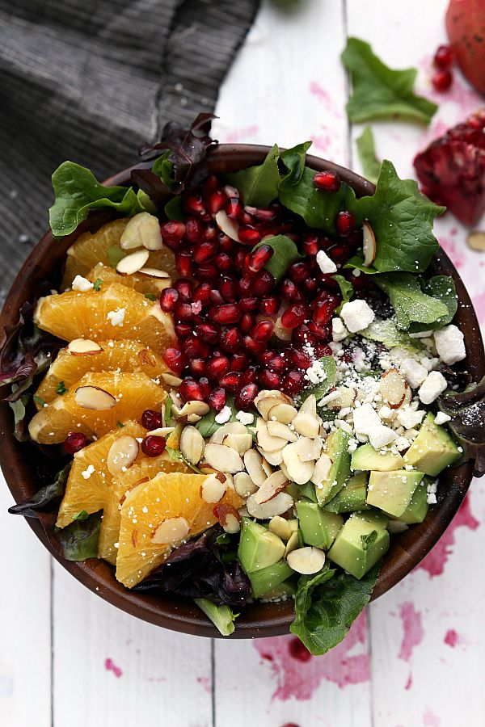

Recommended Recipes of the Season
 Chan’s Recommended Combo 1$29.35  Chan’s Recommended Combo 2$35.45  Chan’s Recommended Combo 3$50.10New in Menu

More Info
Oatmeal Pumpkin Pie Bars
“The best scenario would be to bring these oatmeal pumpkin pie bars to Thanksgiving along with a vegan pumpkin pie. This way, you can have your slice of pumpkin pie and then have one or two of these guys later on. No leftovers of pie? Don’t fret these are small enough that you could stick a few in your pocket and the family would be none the wiser.”Kristy of Keepin’ It Kind
More Info

More Info
Balsamic Roasted Brussels Sprouts
“If you know someone who doesn’t like brussels sprouts, try this recipe and they’ll likely change their mind. Freshly shaved parmesan or toasted pistachios sprinkled on top are a nice touch for the ultimate in brussels sprouts.” Averie of Averie Cooks
More Info

More Info
I’m-On-Cloud-9 Dreamy Vegan Mashed Potatoes
“A far cry from the bland and dense mashed potatoes that frequent Thanksgiving tables, these crowd-pleasing mashed potatoes offer a cloud-like texture and a touch of smokiness woven throughout each bite. I’ve brought them to Thanksgiving gatherings over the last few years, and they’re always the first side dish to go. Move over, green bean casserole. The fact that they’re vegan and offer a micronutrient boost? That’ll be our little secret.” Ashley of Blissful Basil
More Info

More Info
Pomegranate Orange Salad
“This salad is perfect for Thanksgiving because it’s tasty, easy-to-make, and beautiful to look at! Everything comes together quickly and the dressing takes seconds to whip together in your blender or food processor. I especially love this recipe because I have great memories of enjoying it with my family during the holiday season.”
More Info